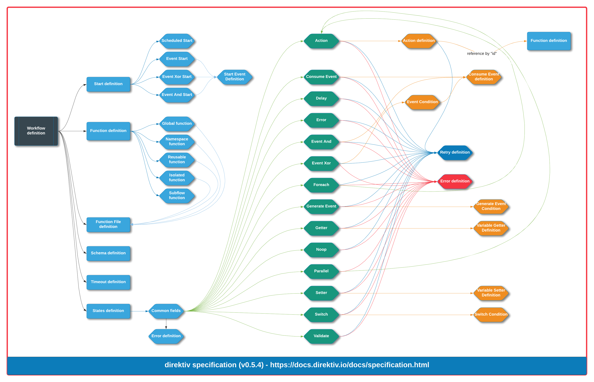

Specification
Workflow Overview Diagram
The diagram below captures the workflow definition specification. This is to be used as a reference only, the full specification is described in detail in the sections below.

Workflow Definition
| Parameter | Description | Type | Required |
|---|---|---|---|
| id | Workflow unique identifier. | string | yes |
| name | Workflow name (metadata). | string | no |
| description | Workflow description (metadata). | string | no |
| version | Version information. | string | no |
| singular | Attempts to invoke this workflow will fail when an instance is running. | no | bool |
| functions | Workflow function definitions. | []FunctionDefinition | no |
| states | Workflow states. | []StateDefinition | no |
| timeouts | Workflow global timeouts. | TimeoutDefinition | no |
| start | Workflow start configuration. | Start | no |
FunctionDefinition
GlobalFunctionDefinition
| Parameter | Description | Type | Required |
|---|---|---|---|
| id | Function definition unique identifier. | string | yes |
| type | Type of function ("knative-global"). | string | yes |
| service | The service being referenced. | string | yes |
| files | Workflow file definition. | []FunctionFileDefinition | no |
NamespacedFunctionDefinition
| Parameter | Description | Type | Required |
|---|---|---|---|
| id | Function definition unique identifier. | string | yes |
| type | Type of function ("knative-namespace"). | string | yes |
| service | The service being referenced. | string | yes |
| files | Workflow file definition. | []FunctionFileDefinition | no |
ReusableFunctionDefinition
| Parameter | Description | Type | Required |
|---|---|---|---|
| id | Function definition unique identifier. | string | yes |
| type | Type of function ("reusable"). | string | yes |
| image | Image URI. | string | yes |
| files | Workflow file definition. | []FunctionFileDefinition | no |
| cmd | Command to run in container | string | no |
| size | Size of virtual machine | enum | no |
| scale | Minimum number of instances | int | no |
A reusable function can be defined in three different sizes: "small"(default), "medium", and "large". These sizes control how much cpu, memory and storage a virtual machine is given for a function when their virtual machine is created.
The default value for "scale" is 0 which means the service will be removed after a ceratin amount of time. It defines the minimum number of containers to run for this services if it is greater than 0.
| Size | CPU | Memory | Storage |
|---|---|---|---|
| small | 1 | 256 MB | +64 MB |
| medium | 1 | 512 MB | +64 MB |
| large | 2 | 1024 MB | +64 MB |
SubflowFunctionDefinition
| Parameter | Description | Type | Required |
|---|---|---|---|
| id | Function definition unique identifier. | string | yes |
| type | Type of function ("subflow"). | enum | yes |
| workflow | ID of workflow within the same namespace. | string | yes |
IsolatedFunctionDefinition
| Parameter | Description | Type | Required |
|---|---|---|---|
| id | Function definition unique identifier. | string | yes |
| type | Type of function ("isolated"). | string | yes |
| image | Image URI. | string | yes |
| files | Workflow file definition. | []FunctionFileDefinition | no |
| cmd | Command to run in container | string | no |
| size | Size of virtual machine | enum | no |
| scale | Minimum number of instances | int | no |
An isolated function can be defined in three different sizes: "small"(default), "medium", and "large". These sizes control how much cpu, memory and storage a virtual machine is given for a function when their virtual machine is created.
The default value for "scale" is 0 which means the service will be removed after a ceratin amount of time. It defines the minimum number of containers to run for this services if it is greater than 0.
| Size | CPU | Memory | Storage |
|---|---|---|---|
| small | 1 | 256 MB | +64 MB |
| medium | 1 | 512 MB | +64 MB |
| large | 2 | 1024 MB | +64 MB |
FunctionFileDefinition
| Parameter | Description | Type | Required |
|---|---|---|---|
| key | Key used to select variable. | string | yes |
| scope | Scope used to select variable. Defaults to 'instance', but can be 'workflow' or 'namespace'. | string | no |
| as | Set the filename of the file. The default is the same as the key. | string | no |
| type | How to treat the file. Options include 'plain', 'base64', 'tar', 'tar.gz'. | string | no |
States
Common Fields
| Parameter | Description | Type | Required |
|---|---|---|---|
| id | State unique identifier. | string | yes |
| transform | jq command to transform the state's data output. |
string | no |
| transition | State to transition to next. | string | no |
| log | jq command to generate data for instance-logging. |
string | no |
| catch | Error handling. | []ErrorDefinition | no |
The id field must be unique amongst all states in the workflow, and may consist of only alphanumeric characters as well as periods, dashes, and underscores.
The transform field can be a jq command string applied to the state information in order to enrich, filter, or change it. Whatever the command resolves to will completely replace the state's information. The transform will be applied immediately before the transition, so it won't change the state information before the main function of the state is performed.
The transition, if provided, must be set to the id of a state within the workflow. If left unspecified, reaching this transition will end the workflow without raising an error.
ErrorDefinition
| Parameter | Description | Type | Required |
|---|---|---|---|
| error | A glob pattern to test error codes for a match. | string | yes |
| transition | State to transition to next. | string | no |
The error parameter can be a glob pattern to match multiple types of errors. When an error is thrown it will be compared against each ErrorDefinition in order until it finds a match. If no matches are found the workflow will immediately abort and escalate the error to any caller, unless the retry policy is ready to take over.
ActionState
| Parameter | Description | Type | Required |
|---|---|---|---|
| id | State unique identifier. | string | yes |
| type | State type ("action"). | string | yes |
| action | Action to perform. | ActionDefinition | yes |
| async | If workflow execution can continue without waiting for the action to return. | boolean | no |
| timeout | Duration to wait for action to complete (ISO8601). | string | no |
| transform | jq command to transform the state's data output. |
string | no |
| transition | State to transition to next. | string | no |
| retries | Retry policy. | RetryDefinition | no |
| catch | Error handling. | []ErrorDefinition | no |
ActionDefinition
| Parameter | Description | Type | Required |
|---|---|---|---|
| function | Name of the referenced function. | string | yes |
| input | jq command to generate the input for the action. |
string | no |
| secrets | List of secrets to temporarily add to the state data under .secrets before running the input jq command. |
[]string | no |
| retries | Retry policy. | RetryDefinition | no |
RetryDefinition
| Parameter | Description | Type | Required |
|---|---|---|---|
| max_attempts | Maximum number of retry attempts. | int | yes |
| delay | Time delay between retry attempts (ISO8601). | string | no |
| multiplier | Value by which the delay is multiplied after each attempt. | float | no |
| codes | Regex patterns to specify which error codes to catch. | []string | yes |
If a retry strategy is defined, the action will be retried on any failures that statify any of the regex codes. If the retry fails max_attempts times a direktiv.retries.exceeded error will be thrown.
An example definition
- id: insert-into-database
type: action
action:
function: insert-into-database-function
input:
customer: jq(.customer)
The Action State runs another workflow as a subflow, or a function as defined in the functions section of the workflow definition. Functions may include things such as containers or direktiv virtual-machines.
The input for the action is determined by an optional jq command in the input field. If unspecified, the default command is ".", which duplicates the entire state data.
After the action has returned, whatever the results were will be stored in the state information under return. If an error occurred, it will be automatically raised, and can be handled using catch, or ignored if the desired behaviour is to abort the workflow.
If async is true, the workflow will not wait for it to return before transitioning to the next state. The action will be fire-and-forget, and considered completely detached from the calling workflow. In this case, the Action State will not set the return value.
ConsumeEventState
| Parameter | Description | Type | Required |
|---|---|---|---|
| id | State unique identifier. | string | yes |
| type | State type ("consumeEvent"). | string | yes |
| event | Event to consume. | ConsumeEventDefinition | yes |
| timeout | Duration to wait to receive event (ISO8601). | string | no |
| transform | jq command to transform the state's data output. |
string | no |
| transition | State to transition to next. | string | no |
| retries | Retry policy. | RetryDefinition | no |
| catch | Error handling. | []ErrorDefinition | no |
ConsumeEventDefinition
| Parameter | Description | Type | Required |
|---|---|---|---|
| type | CloudEvent type. | string | yes |
| context | Key-value pairs for CloudEvent context values that must match. | object | no |
An example definition
- id: wait-for-booking
type: consumeEvent
event:
type: guestbooking
context:
source: 'bookings.*'
customerId: jq(.customerId)
venue: Sydney
timeout: PT1H
transform: jq(.customer)
transition: add-booking-to-database
The ConsumeEvent State is the simplest state you can use to listen for CloudEvents in the middle of a workflow (for triggering a workflow when receiving an event, see Start). More complex event consumers include EventXor State and the EventAnd State.
When a workflow reaches a ConsumeEvent State it will halt its execution until it receives a matching event, where matches are determined according to the type and context parameters. While type is a required string constant, context can include any number of key-value pairs that will be used to filter for a match. The keys for this context field will be checked within the CloudEvent's Context metadata fields for matches. By default, any context value will be treated as a standard Javascript Regex pattern, but jq queries can be performed within a string literal with the jq() funciton. For example: "Hello jq(.name)!"
If the timeout is reached without receiving a matching event a direktiv.stateTimeout error will be thrown, which may be caught and handled via catch.
The event payload will stored at a variable with the same name as the event's type. If the payload is not valid JSON it will be base64 encoded as a string first.
DelayState
| Parameter | Description | Type | Required |
|---|---|---|---|
| id | State unique identifier. | string | yes |
| type | State type ("delay"). | string | yes |
| duration | Duration to delay (ISO8601). | string | yes |
| transform | jq command to transform the state's data output. |
string | no |
| transition | State to transition to next. | string | no |
| retries | Retry policy. | RetryDefinition | no |
| catch | Error handling. | []ErrorDefinition | no |
An example definition
- id: sleep
type: delay
duration: PT1H
transition: fetch-data
The Delay State pauses execution of the workflow for a predefined length of time.
ErrorState
| Parameter | Description | Type | Required |
|---|---|---|---|
| id | State unique identifier. | string | yes |
| type | State type ("error"). | string | yes |
| error | Error code, catchable on a calling workflow. | string | yes |
| message | Format string to provide more context to the error. | string | yes |
| args | A list of jq commands to generate arguments for substitution in the message format string. |
[]string | no |
| transform | jq command to transform the state's data output. |
string | no |
| transition | State to transition to next. | string | no |
| retries | Retry policy. | RetryDefinition | no |
| catch | Error handling. | []ErrorDefinition | no |
An example definition
- id: error-out-of-date
type: error
error: validation.outOfDate
message: "food item %s is out of date"
args:
- jq(.item.name)
The Error State allows a subflow to throw an error, catchable by the calling workflow.
The first transition to an Error State anywhere within the workflow means that a waiting caller -- if one exists -- will receive that error after this subflow returns. This doesn't prevent the Error State from transitioning to other states, which might be necessary to clean up or undo actions performed by the workflow. Subsequent transitions into Error States after the first have no effect.
An error consists of two parts: an error code, and an error message. The code should be a short string can can contain alphanumeric characters, periods, dashes, and underscores. It is good practice to structure error codes similar to domain names, to make them easier to handle. The message allows you to provide extra context, and can be formatted like a printf string where each entry in args will be substituted. The args must be jq commands, allowing the state to insert state information into the error message.
EventAndState
| Parameter | Description | Type | Required |
|---|---|---|---|
| id | State unique identifier. | string | yes |
| type | State type ("eventAnd"). | string | yes |
| events | Events to consume. | []ConsumeEventDefinition | yes |
| timeout | Duration to wait to receive all events (ISO8601). | string | no |
| transform | jq command to transform the state's data output. |
string | no |
| transition | State to transition to next. | string | no |
| retries | Retry policy. | RetryDefinition | no |
| catch | Error handling. | []ErrorDefinition | no |
An example definition
- id: event-and
type: eventAnd
timeout: PT1H
transition: done
events:
- event:
type: purchasePaid
context:
source: 'purchase.*'
customerId: jq(.customerId)
country: Australia
- event:
type: purchaseSent
context:
source: 'purchase.*'
customerId: jq(.customerId)
country: Australia
When a workflow reaches an EventAnd State it will halt its execution until it receives a matching event for every event in its events list, where matches are determined according to the type and context parameters. While type is a required string constant, context can include any number of key-value pairs that will be used to filter for a match. The keys for this context field will be checked within the CloudEvent's Context metadata fields for matches. By default, any context value will be treated as a standard Javascript Regex pattern, but jq queries can be performed within a string literal with the jq() funciton. For example: "Hello jq(.name)!"
If the timeout is reached without receiving matches for all required events a direktiv.stateTimeout error will be thrown, which may be caught and handled via catch.
The event payloads will stored in variables with the same names as each event's type. If a payload is not valid JSON it will be base64 encoded as a string first.
EventXorState
| Parameter | Description | Type | Required |
|---|---|---|---|
| id | State unique identifier. | string | yes |
| type | State type ("eventXor"). | string | yes |
| events | Events to consume, and what to do based on which event was received. | []EventConditionDefinition | yes |
| timeout | Duration to wait to receive event (ISO8601). | string | no |
| retries | Retry policy. | RetryDefinition | no |
| catch | Error handling. | []ErrorDefinition | no |
EventConditionDefinition
| Parameter | Description | Type | Required |
|---|---|---|---|
| event | Event to consume. | ConsumeEventDefinition | yes |
| transition | State to transition to if this branch is selected. | string | no |
| transform | jq command to transform the state's data output. |
string | no |
An example definition
- id: event-xor
type: eventXor
timeout: PT1H
events:
- transition: "reservation-accept"
event:
type: reservationAccept
context:
source: "reservation.*"
guestName: jq(.guestName)
venue: "Compu Global HMN"
- transition: "reservation-decline"
event:
type: reservationDecline
context:
source: "reservation.*"
guestName: jq(.guestName)
venue: "Compu Global HMN"
When a workflow reaches an EventXor State it will halt its execution until it receives any matching event in its events list, where matches are determined according to the type and context parameters. While type is a required string constant, context can include any number of key-value pairs that will be used to filter for a match. The keys for this context field will be checked within the CloudEvent's Context metadata fields for matches. By default, any context value will be treated as a standard Javascript Regex pattern, but jq queries can be performed within a string literal with the jq() funciton. For example: "Hello jq(.name)!"
If the timeout is reached without receiving matches for any required event a direktiv.stateTimeout error will be thrown, which may be caught and handled via catch.
The received event payload will stored in a variable with the same name as its event type. If a payload is not valid JSON it will be base64 encoded as a string first.
ForeachState
| Parameter | Description | Type | Required |
|---|---|---|---|
| id | State unique identifier. | string | yes |
| type | State type ("foreach"). | string | yes |
| array | jq command to produce an array of objects to loop through. |
string | yes |
| action | Action to perform. | ActionDefinition | yes |
| timeout | Duration to wait for all actions to complete (ISO8601). | string | no |
| transform | jq command to transform the state's data output. |
string | no |
| transition | State to transition to next. | string | no |
| retries | Retry policy. | RetryDefinition | no |
| catch | Error handling. | []ErrorDefinition | no |
The ForeachState can be used to split up state data into an array and then perform an action on each element in parallel.
The jq command provided in the array must produce an array or a direktiv.foreachInput error will be thrown. The jq command used to generate the input for the action will be applied to a single element from that array.
The return values of each action will be included in an array stored at .return at the same index from which its input was generated.
GenerateEventState
| Parameter | Description | Type | Required |
|---|---|---|---|
| id | State unique identifier. | string | yes |
| type | State type ("generateEvent"). | string | yes |
| event | Event to generate. | GenerateEventDefinition | yes |
| transform | jq command to transform the state's data output. |
string | no |
| delay | Duration to wait before publishing event (ISO8601). | string | no |
| transition | State to transition to next. | string | no |
| retries | Retry policy. | RetryDefinition | no |
| catch | Error handling. | []ErrorDefinition | no |
GenerateEventDefinition
| Parameter | Description | Type | Required |
|---|---|---|---|
| type | CloudEvent type. | string | yes |
| source | CloudEvent source. | string | yes |
| data | A jq command to generate the data (payload) for the produced event. |
string | no |
| datacontenttype | An RFC 2046 string specifying the payload content type. | string | no |
| context | Add additional event extension context attributes (key-value). | object | no |
The GenerateEvent State will produce an event that other workflows could listen for.
If the optional datacontenttype is defined and set to something other than application/json, and the jq command defined in data produces a base64 encoded string, it will be decoded before being used as the event payload.
GetterState
| Parameter | Description | Type | Required |
|---|---|---|---|
| id | State unique identifier. | string | yes |
| type | State type ("getter"). | string | yes |
| variables | Variables to fetch. | []VariableGetterDefinition | yes |
| transform | jq command to transform the state's data output. |
string | no |
| transition | State to transition to next. | string | no |
| retries | Retry policy. | RetryDefinition | no |
| catch | Error handling. | []ErrorDefinition | no |
VariableGetterDefinition
| Parameter | Description | Type | Required |
|---|---|---|---|
| key | Variable name. | string | yes |
| scope | Variable scope ("instance", "workflow", or "namespace"). | string | yes |
The getter state is used to retrieve persistent data.
NoopState
| Parameter | Description | Type | Required |
|---|---|---|---|
| id | State unique identifier. | string | yes |
| type | State type ("noop"). | string | yes |
| transform | jq command to transform the state's data output. |
string | no |
| transition | State to transition to next. | string | no |
| retries | Retry policy. | RetryDefinition | no |
| catch | Error handling. | []ErrorDefinition | no |
An example definition
- id: hello
type: noop
transform:
message: "Hello"
transition: world
The No-op State exists for when nothing more than generic state functionality is required. A common use-case would be to perform a jq operation on the state data without performing another operation.
ParallelState
| Parameter | Description | Type | Required |
|---|---|---|---|
| id | State unique identifier. | string | yes |
| type | State type ("parallel"). | string | yes |
| actions | Actions to perform. | []ActionDefinition | yes |
| mode | Option types on how to complete branch execution: "and" (default), or "or". | enum | no |
| timeout | Duration to wait for all actions to complete (ISO8601). | string | no |
| transform | jq command to transform the state's data output. |
string | no |
| transition | State to transition to next. | string | no |
| catch | Error handling. | []ErrorDefinition | no |
The Parallel State is an expansion on the Action State, used for running multiple actions in parallel.
The state can operate in two different modes: and and or. In and mode all actions must return successfully before completing. In or mode the state can complete as soon as any one action returns without error.
Return values from each of the actions will be stored in an array at .return in the order that each action is defined. If an action doesn't return but the state can still complete without errors any missing return values will be null in the array.
If the timeout is reached before the state can transition a direktiv.stateTimeout error will be thrown, which may be caught and handled via catch. Any actions still running when the state transitions will be cancelled with "best effort" attempts.
SetterState
| Parameter | Description | Type | Required |
|---|---|---|---|
| id | State unique identifier. | string | yes |
| type | State type ("setter"). | string | yes |
| variables | Variables to push. | []VariableSetterDefinition | yes |
| transform | jq command to transform the state's data output. |
string | no |
| transition | State to transition to next. | string | no |
| retries | Retry policy. | RetryDefinition | no |
| catch | Error handling. | []ErrorDefinition | no |
VariableSetterDefinition
| Parameter | Description | Type | Required |
|---|---|---|---|
| key | Variable name. | string | yes |
| scope | Variable scope ("instance", "workflow", or "namespace"). | string | yes |
| value | jq command to generate variable value. |
string | yes |
| mimeType | MimeType to store variable value as. | string | no |
The setter state is used to store persistent data. A mimeType type can be provided to specify the type of content a variable is. If mimeType is not provided it will default to application/json. There are three mimeType's that are specifcically handled:
* application/json - Default behaviour, value is treated as a json object.
* text/plain - Value is treated as a plaintext string, no json marshalling is done.
* application/octet-stream - Value is expected to be a base64 string and is stored as its decoded binary value.
Read more about mimeTyps in the Examples.
SwitchState
| Parameter | Description | Type | Required |
|---|---|---|---|
| id | State unique identifier. | string | yes |
| type | State type ("switch"). | string | yes |
| conditions | Conditions to evaluate and determine which state to transition to next. | []SwitchConditionDefinition | yes |
| defaultTransition | State to transition to next if no conditions are matched. | string | no |
| defaultTransform | jq command to transform the state's data output. |
string | no |
| retries | Retry policy. | RetryDefinition | no |
| catch | Error handling. | []ErrorDefinition | no |
SwitchConditionDefinition
| Parameter | Description | Type | Required |
|---|---|---|---|
| condition | jq command evaluated against state data. True if results are not empty. |
string | yes |
| transition | State to transition to if this branch is selected. | string | no |
| transform | jq command to transform the state's data output. |
string | no |
An example definition
- id: decision
type: switch
conditions:
- condition: jq(.patient.contactInfo.mobile)
transition: sms
transform: 'jq(. + { phone: .contact.mobile)'
- condition: jq(.patient.contactInfo.landline)
transition: call
transform: 'jq(. + { phone: .contact.landline })'
defaultTransition: email
The Switch State is used to perform conditional transitions based on the current state information. A condition can be any jq command. The command will be run on the current state information and a result of anything other than null, false, {}, [], "", or 0 will cause the condition to be considered a match.
The list of conditions is evaluated in-order and the first match determines what happens next. If no conditions are matched the defaultTransition will be used.
ValidateState
| Parameter | Description | Type | Required |
|---|---|---|---|
| id | State unique identifier. | string | yes |
| type | State type ("validate"). | string | yes |
| subject | jq command to select the subject of the schema validation. Defaults to '.' if unspecified. |
no | string |
| schema | Name of the referenced state data schema. | string | yes |
| transform | jq command to transform the state's data output. |
string | no |
| transition | State to transition to next. | string | no |
| retries | Retry policy. | RetryDefinition | no |
| catch | Error handling. | []ErrorDefinition | no |
An example definition
- id: validate-input
type: validate
schema:
type: object
required:
- name
properties:
name:
type: string
additionalProperties: false
transition: process-request
This schema is based off the following JSON Schema:
{
"type":"object",
"required":[
"name"
],
"properties":{
"name":{
"type":"string"
}
},
"additionalProperties":false
}
The Validate State can be used to validate the structure of the state's data. The schema field takes a yaml-ified representation of a JSON Schema document.
TimeoutDefinition
| Parameter | Description | Type | Required |
|---|---|---|---|
| interrupt | Duration to wait before triggering a timeout error in the workflow (ISO8601). | string | no |
| kill | Duration to wait before killing the workflow (ISO8601). | string | no |
Start
ScheduledStartDefinition
| Parameter | Description | Type | Required |
|---|---|---|---|
| type | Start type ("scheduled"). | string | yes |
| state | ID of the state to use as the start state. | string | no |
| cron | Cron expression to schedule workflow. | string | no |
EventStartDefinition
| Parameter | Description | Type | Required |
|---|---|---|---|
| type | Start type ("event"). | string | yes |
| state | ID of the state to use as the start state. | string | no |
| event | Event to listen for, which can trigger the workflow. | StartEventDefinition | yes |
StartEventDefinition
| Parameter | Description | Type | Required |
|---|---|---|---|
| type | CloudEvent type. | string | yes |
| filters | Key-value regex pairs for CloudEvent context values that must match. | object | no |
EventsXorStartDefinition
| Parameter | Description | Type | Required |
|---|---|---|---|
| type | Start type ("eventsXor"). | string | yes |
| state | ID of the state to use as the start state. | string | no |
| events | Event to listen for, which can trigger the workflow. | []StartEventDefinition | yes |
EventsAndStartDefinition
| Parameter | Description | Type | Required |
|---|---|---|---|
| type | Start type ("eventsAnd"). | string | yes |
| state | ID of the state to use as the start state. | string | no |
| events | Event to listen for, which can trigger the workflow. | []StartEventDefinition | yes |
| lifespan | Maximum duration an event can be stored before being discarded while waiting for other events (ISO8601). | string | no |
| correlate | Context keys that must exist on every event and have matching values to be grouped together. | []string | no |